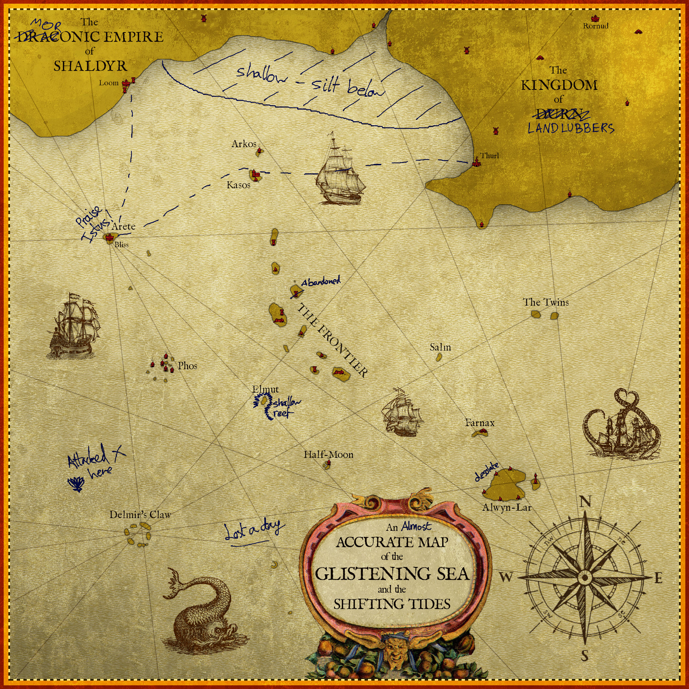
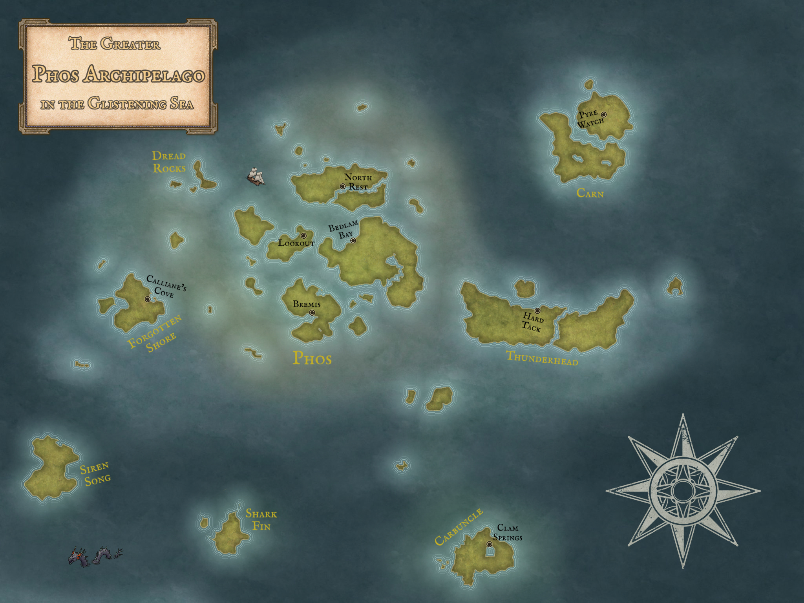

Day 4 - Data: Your Data
D&D Maps
In a personal 'here's one (two) I made earlier', here are a couple of maps I made for a whimsical seafaring D&D game with friends.
The world map for the setting.
An archipelago of islands filled with adventure!